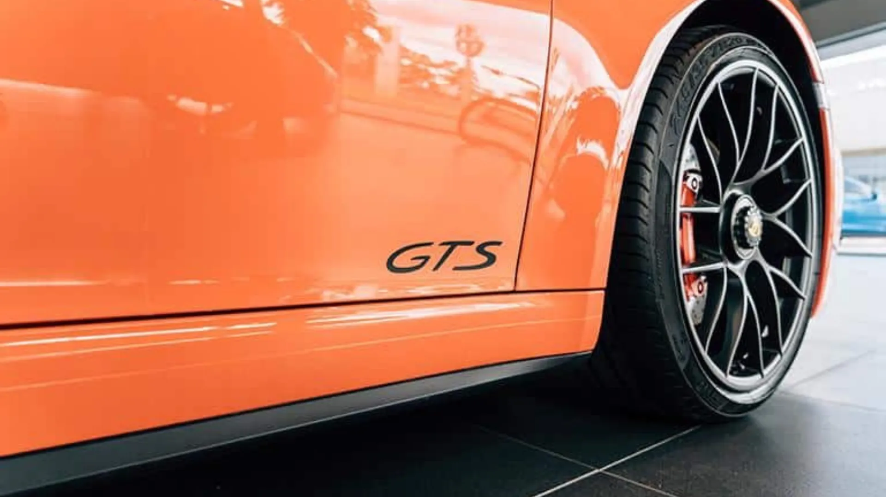

Qual o tipo de carro que mais te interessa?

Qual a sua prioridade em um carro?
Qual é o seu estilo de direção?
Você prefere um carro tecnológico ou clássico?
Você não consegue decidir e acaba deixando a escolha para outra hora.
Você valoriza mais a economia de combustível ou a potência?

Você prefere um carro para a cidade ou para viagens?
De acordo sua escolha, um carro híbrido seria o certo para você.

Os carros elétricos podem ser uma boa alternativa para você.
Um hatch parece ideal para a sua rotina na cidade.
Para longas viagens, um SUV seria perfeito para você.

De acordo com sua resposta,encontramos alguns carros que combinam com você. Explore mais no qr code acima!